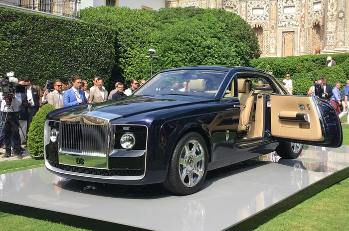
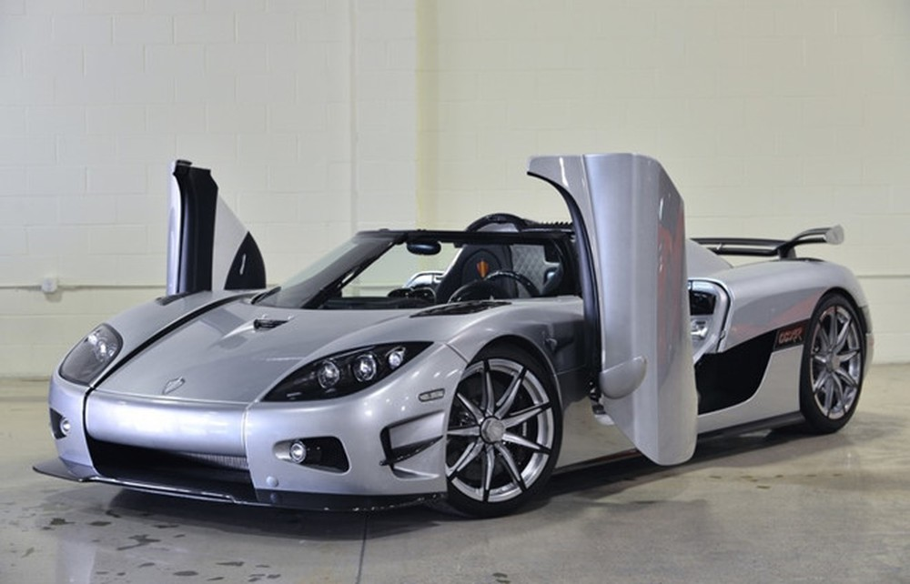
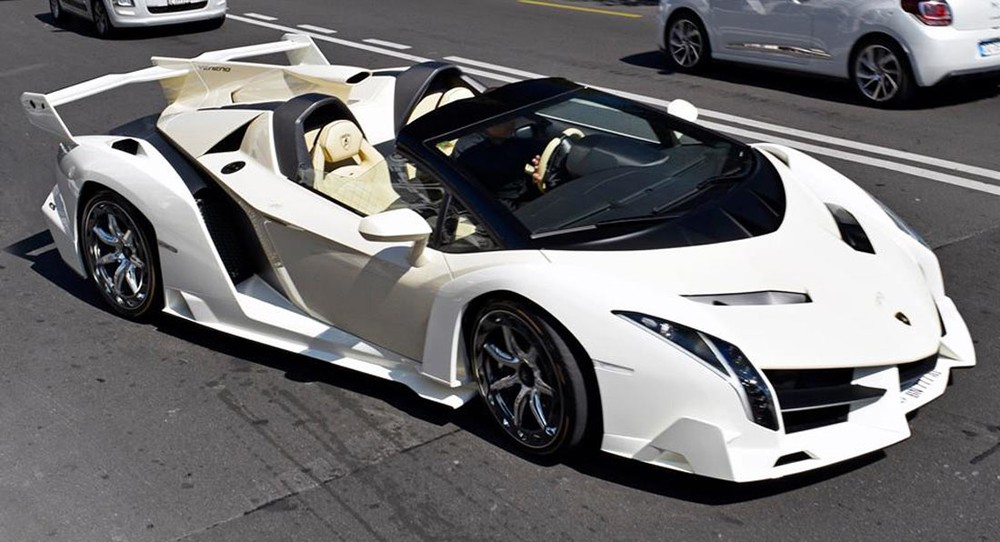
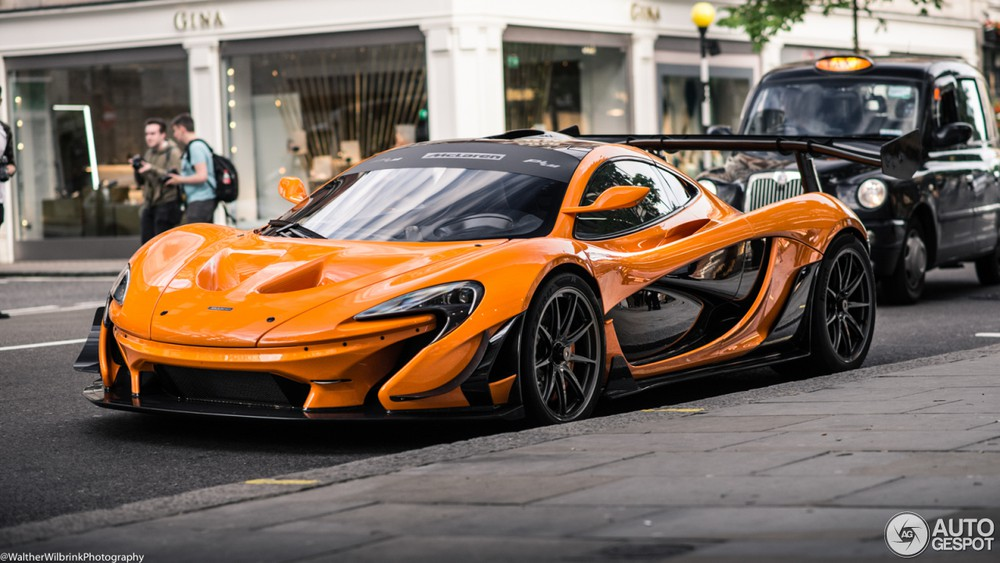
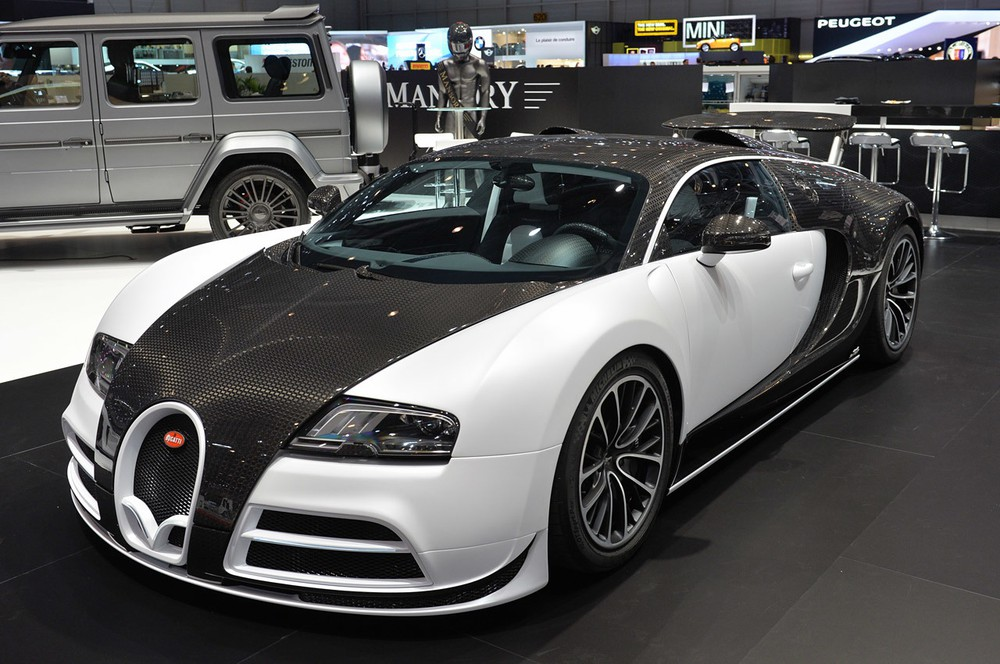

10 siêu xe đắt nhất trên thế giới: Có tiền chưa chắc có xe
1. Rolls Royce Sweptail - 13 triệu USD (295,5 tỷ đồng)
Rolls-Royce Sweptail được xem là chiếc xe đắt nhất mọi thời đại với giá "cứa cổ" 13 triệu USD (khoảng 295,5 tỷ đồng). Sweptail được xây dựng bởi bộ phận cá nhân hóa xe Rolls-Royce cho một vị khách hàng giàu có và muốn giữ kín danh tính.Mẫu xe siêu sang có thiết kế khoang cabin lấy cảm hứng từ du thuyền hạng sang, được độ lại từ chiếc Rolls-Royce Phantom Drophead Coupe.Xe vẫn giữ nguyên động cơ V12 turbo, 6.75 lít, cung cấp 453 mã lực và mô-men xoắn 720 Nm. Hộp số 8 tốc độ tự động, truyền động cầu sau.Siêu xe Koenigsegg Agera RS mạnh 1.160 mã lực nhờ khối động cơ V8 tăng áp. Trong khi đó, trọng lượng xe khoảng 1.395 kg, cho tỷ lệ sức mạnh/khối lượng gần đạt 1:1, tỷ lệ lý tưởng với các siêu xe.

2. Koenigsegg CCXR Trevita - 4,8 triệu USD (109 tỷ đồng)
Đứng thứ hai trong danh sách là siêu xe "dệt kim cương" Koenigsegg CCXR Trevita. Thân xe được phủ hoàn toàn bằng carbon trắng, khi ánh sáng mặt trời chiếu vào thân xe Trevita, nó lấp lánh như hàng triệu viên kim cương trắng nhỏ được truyền bên trong thân xe bằng sợi carbon mà mắt thường có thể nhìn thấy.Bên dưới lớp phủ là một động cơ V8 tăng áp kép dung tích 4.8 lít, có tổng công suất 1.004 mã lực và mô-men xoắn cực đại 797.Với tính chất hàng hiếm khi chỉ có đúng 2 chiếc CCXR Trevita trên thế giới thế nên không phải ai cũng mua nổi mẫu siêu xe độc đáo này kể cả có rất nhiều tiền đi chăng nữa. Võ sĩ boxing nổi tiếng Floyd Mayweather hiện là 1 trong 2 người sở hữu Koenigsegg CCXR Trevita.

3. Lamborghini Veneno Roadster - 4,5 triệu USD (102 tỷ đồng)
Lamborghini Veneno Roadster bám sát nút ở vị trí thứ ba với giá 4,5 triệu USD (khoảng 102 tỉ đồng) bằng giá của một hòn đảo nhỏ.Siêu xe này lấy cảm hứng từ Lamborghini Aventador. Xe được trang bị động cơ V12 6.5L 750 mã lực (559 kW) và tốc độ tối đa 355 km/h. Thân xe làm từ sợi carbon và nhôm nhẹ giúp giảm tối đa khối lượng, ở mức 1.490 kg khi chưa đổ xăng. Mui xe có thể tháo rời cũng làm từ sợi carbon.Siêu xe tăng tốc từ 0-100 km/h sau 2,9 giây trước khi đạt tốc độ tối đa khoảng 354 km/h. Chỉ có 9 chiếc được sản xuất, một chiếc đã được bán với giá 11 triệu USD.

4. McLaren P1 LM - 3,6 triệu đô la (81,8 tỷ đồng)
Siêu xe McLaren P1 LM sẽ là phiên bản "nhanh nhất, hiếm nhất và cuối cùng" của dòng siêu xe hybrid P1. Mặc dù được giao tới khách hàng bởi bộ phận Special Operations của McLaren, nhưng chiếc xe lại được tạo ra bởi Lanzante Motorsport, một hãng chế tạo xe đua.Giống như P1 GTR, P1 LM cũng được trang bị động cơ V8 3.8 lít và một động cơ điện hoạt động song song, tạo ra tổng công suất 1000 mã lực.Lanzante đã không chỉ giữ nguyên thiết kế đậm chất xe đua của P1 GTR mà còn tiếp tục cải tiến nó với cánh đuôi cùng cản trước mới, để tăng thêm 40% lực nén thân xe xuống mặt đường. Hiện tại, chỉ có 5 chiếc đã được chế tạo, tất cả chúng đều có chủ.

5. Bugatti Veyron phiên bản giới hạn của Masory Vivere - 3,4 triệu USD (77 tỷ đồng)
Phiên bản Mansory Vivere không chỉ là những chiếc xe đắt nhất thế giới mà còn là một trong những chiếc xe nhanh nhất. Được mô hình hóa dựa trên Grand Sport Vitesse Roadster, chiếc xe Đức này có lớp vỏ bằng sợi carbon.Đèn LED được nâng cấp ở khắp mọi nơi - cụm đèn pha và đèn hậu, buồng lái. Bugatti Veyron Mansory Vivere trang bị động cơ W16, dung tích 8.0 lít đi kèm 4 bộ tăng áp tạo ra công suất tối đa 1.184 mã lực. Phiên bản ban đầu có thể đạt tới 253 mph (405km/h).
